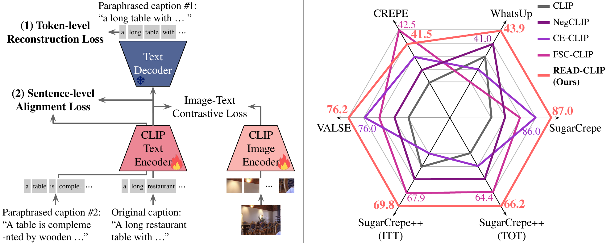
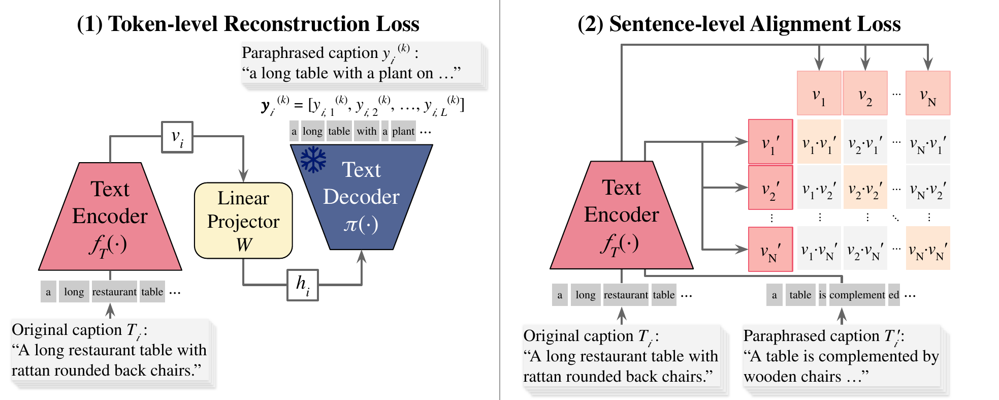

Left: READ adds a token-level reconstruction objective (via a frozen text decoder) and a sentence-level alignment objective on top of CLIP's image–text contrastive loss. Right: READ-CLIP sets a new state of the art across five compositional reasoning benchmarks.
Abstract
Vision–language models trained with standard contrastive objectives often behave like a bag of words: they attend to individual tokens rather than the relationships between them, and struggle with compositional reasoning. We propose READ (REconstruction and Alignment of text Descriptions), a lightweight fine-tuning recipe that augments the contrastive loss with two auxiliary objectives: a token-level reconstruction objective, in which a frozen text decoder reconstructs related captions from the CLIP text embedding, and a sentence-level alignment objective that pulls paraphrases together in the embedding space. The two objectives are complementary—reconstruction captures word relationships within a caption, while alignment keeps representations consistent across paraphrases with different wording. Applied to CLIP (and to variants such as NegCLIP and FSC-CLIP), READ sets a new state of the art across five compositional reasoning benchmarks: SugarCrepe++, WhatsUp, CREPE, VALSE, and SugarCrepe.
Method
READ keeps CLIP's image–text contrastive loss and adds two training-only objectives on the
text side. At inference, READ-CLIP is a drop-in CLIPModel—no decoder, no extra parameters, and the
same compute as the original CLIP.

(1) Token-level reconstruction: a linear projector feeds the text embedding into a frozen decoder that reconstructs a paraphrased caption. (2) Sentence-level alignment: paraphrases are aligned with their original captions in the embedding space.
Token-level reconstruction
A frozen T5 decoder (t5-v1_1-large) reconstructs related captions from the CLIP
text embedding, forcing the embedding to retain word-relationship information rather than a bag of tokens.
Sentence-level alignment
Paraphrases of the same caption are pulled together in the embedding space, making the text encoder robust to surface wording and improving consistency across rephrasings.
Results
Compositional reasoning accuracy with a ViT-B/32 backbone, compared against strong baselines.
| Benchmark | READ-CLIP | NegCLIP | FSC-CLIP |
|---|---|---|---|
| WhatsUp | 43.9 | 42.4 | 39.8 |
| VALSE | 76.2 | 73.7 | 74.4 |
| CREPE | 41.5 | 30.5 | 42.5 |
| SugarCrepe | 87.0 | 83.6 | 85.2 |
| SugarCrepe++ (ITT) | 69.8 | 65.0 | 67.9 |
| SugarCrepe++ (TOT) | 66.2 | 62.5 | 64.4 |
| Average | 64.1 | 59.6 | 62.4 |
See the paper for the full set of baselines and ablations.
Usage
The checkpoint loads directly with transformers as a standard CLIPModel:
import torch
from transformers import CLIPModel, CLIPProcessor
model = CLIPModel.from_pretrained("Mayfull/READ-CLIP")
processor = CLIPProcessor.from_pretrained("openai/clip-vit-base-patch32")
inputs = processor(text=["a photo of a cat", "a photo of a dog"],
images=image, return_tensors="pt", padding=True)
with torch.no_grad():
probs = model(**inputs).logits_per_image.softmax(dim=-1)Citation
@inproceedings{kwon2026enhancing,
title={Enhancing Compositional Reasoning in {CLIP} via Reconstruction and Alignment of Text Descriptions},
author={Jihoon Kwon and Kyle Min and Jy-yong Sohn},
booktitle={The Thirty-ninth Annual Conference on Neural Information Processing Systems},
year={2026},
url={https://openreview.net/forum?id=6uKIm4bfEe}
}